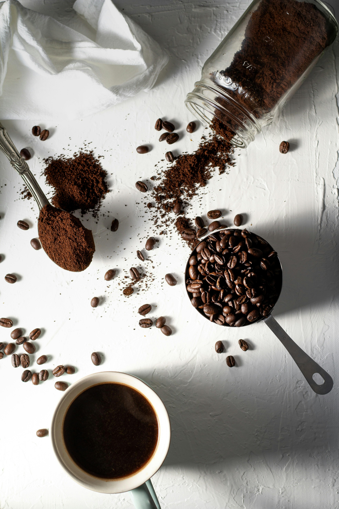

Coffee Culture
Oct 05, 2026
The Magic of Kapeng Barako
Exploring the strong, unapologetic flavor of Batangas' famous Liberica beans. More than a morning jolt — a testament to Filipino resilience.
Read the entry